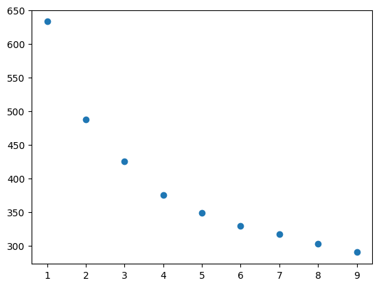

# import needed packages
from functions import *
# read in data
data = pd.read_csv("data_honorifics.csv")
# random seed for clustering
randomSeed = 5Honorifics Data Analysis
Part One: Clustering Based on Mapped Values
For the first try at clustering the honorifics data, I created a vocab list and mapped each answer to a number. Then clustered the dataset from there. The benefits of this approach are that it’s easy to implement and easy to use for clustering. The drawbacks are that using Kmeans to cluster will probably result in slightly skewed clustering since numbers that are closer to each other will be treated as more similar (which is not necessarily true since the numbers have very little meaning in this context). This issue will be addressed in the second section.
# isolate the question portion of the dataset
questions = data.iloc[:,7:24]
questions = questions.fillna("I don't know")
vocab = []
qcols = []
# get questions column names
for question in range(1,18):
qcols.append("Q"+str(question))
# get total unique responses in survey
stackedDf = questions.stack()
vocab = stackedDf.unique()Below is the dictionary created to map string values to numbers. A sample is printed out.
# make a dict to map words to numbers
dict = {}
for val in range(len(vocab)):
dict[vocab[val]]=val
for i,key in enumerate(dict.keys()):
print(key+":"+str(dict[key]))
if i==5:
breakGrandma:0
stone:1
Teacher:2
Teacup:3
Thought:4
Cat:5Next we take the dictionary and use it to create a dataframe where the string values are mapped to numbers. This dataframe is what we will use to create clusters.
# map the dataframe vals to nums
df = pd.DataFrame()
for q in qcols:
df[q] = questions[q].map(dict)
# fill nas with idks
df = df.fillna(dict["I don\'t know"])
df| Q1 | Q2 | Q3 | Q4 | Q5 | Q6 | Q7 | Q8 | Q9 | Q10 | Q11 | Q12 | Q13 | Q14 | Q15 | Q16 | Q17 | |
|---|---|---|---|---|---|---|---|---|---|---|---|---|---|---|---|---|---|
| 0 | 0 | 1 | 2 | 3 | 1 | 2 | 4 | 3 | 5 | 5 | 6 | 7 | 8 | 9 | 10 | 11 | 12 |
| 1 | 4 | 1 | 2 | 3 | 1 | 2 | 4 | 3 | 5 | 5 | 13 | 14 | 8 | 9 | 15 | 11 | 12 |
| 2 | 0 | 13 | 2 | 13 | 16 | 2 | 13 | 17 | 9 | 13 | 8 | 13 | 8 | 9 | 13 | 18 | 13 |
| 3 | 0 | 1 | 2 | 3 | 1 | 2 | 15 | 3 | 5 | 15 | 8 | 19 | 8 | 20 | 15 | 18 | 9 |
| 4 | 0 | 1 | 2 | 3 | 1 | 2 | 4 | 3 | 5 | 5 | 6 | 7 | 8 | 9 | 21 | 11 | 12 |
| ... | ... | ... | ... | ... | ... | ... | ... | ... | ... | ... | ... | ... | ... | ... | ... | ... | ... |
| 62 | 0 | 13 | 2 | 13 | 13 | 2 | 32 | 13 | 13 | 13 | 13 | 13 | 8 | 9 | 15 | 11 | 13 |
| 63 | 0 | 1 | 2 | 3 | 1 | 2 | 32 | 3 | 5 | 5 | 8 | 19 | 8 | 15 | 15 | 15 | 15 |
| 64 | 0 | 1 | 2 | 3 | 1 | 2 | 4 | 3 | 5 | 5 | 6 | 7 | 8 | 22 | 10 | 15 | 12 |
| 65 | 0 | 1 | 2 | 3 | 1 | 2 | 32 | 3 | 9 | 5 | 8 | 19 | 8 | 20 | 15 | 15 | 15 |
| 66 | 4 | 1 | 2 | 3 | 1 | 2 | 4 | 3 | 5 | 5 | 8 | 7 | 8 | 22 | 10 | 11 | 12 |
67 rows × 17 columns
Now that we have our new dataframe, we can perform clustering (using Kmeans). We begin by looking at the inertias of different kmeans cluster numbers to determine an appropriate number of clusters for our data. As you can see from the below graph, there is no clear elbow. Further analysis will all be performed on sets of 6 clusters.
# graph cluster inertias for 1-15 clusters
clusterDf = doKmeans(df,range(1,15))
Age Across Clusters
Now that we have clusters to work with, we can see if there are any age differences between clusters of responses. As you can tell, there are some age differences between clusters, but when we run statistical analyses the age differences are shown to not be significant.
# add age to the cluster df
clusterDf["Age"]=data["Age"]
# print the cluster sets for 6 clusters
rows6 = printClusterSetAge(clusterDf,6)
print(f_oneway(*rows6,nan_policy="omit"))Cluster 0
mean: 28.0
Cluster 1
mean: 34.5
Cluster 2
mean: 24.263157894736842
Cluster 3
mean: 25.75
Cluster 4
mean: 30.166666666666668
Cluster 5
mean: 19.666666666666668
F_onewayResult(statistic=1.2274814354764665, pvalue=0.30991000999963997)To further confirm these results, we do the same analysis on 2, 4, and 8 clusters of the data.
print("Two Clusters: ")
rows2 = printClusterSetAge(clusterDf,2)
print("--------------------------------\nFour Clusters: ")
rows4 = printClusterSetAge(clusterDf,4)
print("--------------------------------\nEight Clusters: ")
rows8 = printClusterSetAge(clusterDf,8)Two Clusters:
Cluster 0
mean: 26.372093023255815
Cluster 1
mean: 29.5
--------------------------------
Four Clusters:
Cluster 0
mean: 26.5625
Cluster 1
mean: 34.5
Cluster 2
mean: 26.25925925925926
Cluster 3
mean: 25.75
--------------------------------
Eight Clusters:
Cluster 0
mean: 28.875
Cluster 1
mean: 36.57142857142857
Cluster 2
mean: 25.782608695652176
Cluster 3
mean: 23.0
Cluster 4
mean: 29.714285714285715
Cluster 5
mean: 21.5
Cluster 6
mean: 22.333333333333332
Cluster 7
mean: 19.666666666666668
Below is the statistical analyses of the age for 2, 4, and 8 clusters. None of them are statistically significant.
# ttest on clusters ages
# no significant
print(ttest_ind(list(rows2[0]),list(rows2[1]),nan_policy="omit"))
print(f_oneway(*rows4,nan_policy="omit"))
print(f_oneway(*rows8,nan_policy="omit"))TtestResult(statistic=-0.8899559262088101, pvalue=0.3773658821898026, df=55.0)
F_onewayResult(statistic=0.937386376494588, pvalue=0.42918935134444425)
F_onewayResult(statistic=1.2762466067371379, pvalue=0.28162824838667305)Post Clustering analysis
Below you will find the analysis we did to see if age was correlated with any of the specific question responses, as well as if any one question response was correlated to another question response. Below, we look at if age is correlated with the response to each individual question. The three questions with statistically significant differences in age between responses were questions 7, 10, and 16.
Result summary: - possible correlation between age and response in Q7, Q10 and Q16 - caveat that sample sizes for some responses within these questions were very small - correlation between question responses mostly for “i don’t know”
# add age col to dataframe
df["Age"]=data["Age"]
# does the pVal test for every question and prints the ones with significant p-vals
for q in qcols:
val = pValTest(df,q)[1]
if val<0.05:
print(q)
print(val)Q7
0.00012868932909781148
Q10
5.655010199102175e-05
Q16
0.0029334574030703015/Users/zoestephens/Desktop/summer2024/zstephe.github.io/honorifics/functions.py:99: SmallSampleWarning: After omitting NaNs, one or more sample arguments is too small; all returned values will be NaN. See documentation for sample size requirements.
result = f_oneway(*rows,nan_policy="omit")Now that we have identified the statistically significant questions, we will look more closely at each question and see which specific responses had different age ranges.
Question 7
Question text: This thought is nice.
The “Listener” response has a significantly higher mean than all the other responses.
# looking at Question 7
# appears to be a higher age with the Listener answer, but not many datapoints
examineQuestion("Q7",questions,df["Age"])Tukey's HSD Pairwise Group Comparisons (95.0% Confidence Interval)
Comparison Statistic p-value Lower CI Upper CI
(0 - 1) -2.019 0.921 -10.485 6.446
(0 - 2) -27.769 0.000 -43.134 -12.405
(0 - 3) 5.897 0.740 -9.467 21.262
(1 - 0) 2.019 0.921 -6.446 10.485
(1 - 2) -25.750 0.001 -42.303 -9.197
(1 - 3) 7.917 0.587 -8.636 24.470
(2 - 0) 27.769 0.000 12.405 43.134
(2 - 1) 25.750 0.001 9.197 42.303
(2 - 3) 33.667 0.000 12.729 54.605
(3 - 0) -5.897 0.740 -21.262 9.467
(3 - 1) -7.917 0.587 -24.470 8.636
(3 - 2) -33.667 0.000 -54.605 -12.729
Counts of each Response
Q7
Thought 45
I don't know 14
Listener 4
Thinker of Thought 4
Name: count, dtype: int64
Group Means
Thought : 25.564102564102566
I don't know : 27.583333333333332
Listener : 53.333333333333336
Thinker of Thought : 19.666666666666668
Question 10
Question text: The cat is big.
The “Cat Owner” response was not included in the tukey test since there was only one such response. The “Listener” response has a significantly higher mean than all the other responses (excluding cat owner).
# looking at Question 10
# appears to have a higher age with Listener and Cat owner responses but not many responses
examineQuestion("Q10",questions,df['Age'])SKIPPING A VALUE DUE TO LACK OF DATA (ONLY 1 POINT AVAILABLE)
Tukey's HSD Pairwise Group Comparisons (95.0% Confidence Interval)
Comparison Statistic p-value Lower CI Upper CI
(0 - 1) -8.710 0.192 -20.630 3.210
(0 - 2) -30.460 0.000 -47.002 -13.918
(1 - 0) 8.710 0.192 -3.210 20.630
(1 - 2) -21.750 0.029 -41.617 -1.883
(2 - 0) 30.460 0.000 13.918 47.002
(2 - 1) 21.750 0.029 1.883 41.617
Counts of each Response
Q10
Cat 56
I don't know 7
Listener 3
Cat owner 1
Name: count, dtype: int64
Group Means
Cat : 25.04
I don't know : 33.75
Listener : 55.5
Cat owner : 49.0
Question 16
Question text: Mother’s murderer was cruel.
The “Mother” response has a significantly higher mean than the “Murderer” and “Other” responses.
# looking at Question 16
# appears to have a higher age with Mother but not many responses
# tukey shows difference between (Mother and Murderer) and (Mother and Listener)
# participants who picked "Mother" older than those who picked "Murderer" or "Listener"
examineQuestion("Q16",questions,df['Age'])Tukey's HSD Pairwise Group Comparisons (95.0% Confidence Interval)
Comparison Statistic p-value Lower CI Upper CI
(0 - 1) -18.662 0.003 -32.253 -5.071
(0 - 2) 5.338 0.801 -8.253 18.929
(0 - 3) -6.262 0.840 -23.430 10.906
(0 - 4) 2.738 0.996 -18.054 23.530
(1 - 0) 18.662 0.003 5.071 32.253
(1 - 2) 24.000 0.004 5.831 42.169
(1 - 3) 12.400 0.461 -8.580 33.380
(1 - 4) 21.400 0.103 -2.636 45.436
(2 - 0) -5.338 0.801 -18.929 8.253
(2 - 1) -24.000 0.004 -42.169 -5.831
(2 - 3) -11.600 0.528 -32.580 9.380
(2 - 4) -2.600 0.998 -26.636 21.436
(3 - 0) 6.262 0.840 -10.906 23.430
(3 - 1) -12.400 0.461 -33.380 8.580
(3 - 2) 11.600 0.528 -9.380 32.580
(3 - 4) 9.000 0.867 -17.225 35.225
(4 - 0) -2.738 0.996 -23.530 18.054
(4 - 1) -21.400 0.103 -45.436 2.636
(4 - 2) 2.600 0.998 -21.436 26.636
(4 - 3) -9.000 0.867 -35.225 17.225
Counts of each Response
Q16
Murderer 49
Mother 5
Listener 5
Other 4
I don't know 4
Name: count, dtype: int64
Group Means
Murderer : 25.738095238095237
Mother : 44.4
Other : 23.0
Listener : 20.4
I don't know : 32.0
hot_encoded_questions=pd.DataFrame()
for col in questions.columns:
length = questions[col].nunique()
arr = []
for i in range(length):
arr.append(0)
temp = {}
for i,val in enumerate(questions[col].unique(),0):
arr[i]=1
temp[val]=list(arr)
arr[i]=0
hot_encoded_questions[col] = questions[col].map(temp)test = pd.DataFrame()
for col in questions.columns:
for val in questions[col].unique():
test[col+"-"+val]=(questions[col]==val).map({True: 1, False: 0})
test| Q1-Grandma | Q1-Thought | Q1-I don't know | Q2-stone | Q2-I don't know | Q2-Listener | Q3-Teacher | Q3-I don't know | Q4-Teacup | Q4-I don't know | ... | Q16-Murderer | Q16-Mother | Q16-Other | Q16-Listener | Q16-I don't know | Q17-Car | Q17-I don't know | Q17-Father | Q17-Listener | Q17-B | |
|---|---|---|---|---|---|---|---|---|---|---|---|---|---|---|---|---|---|---|---|---|---|
| 0 | 1 | 0 | 0 | 1 | 0 | 0 | 1 | 0 | 1 | 0 | ... | 1 | 0 | 0 | 0 | 0 | 1 | 0 | 0 | 0 | 0 |
| 1 | 0 | 1 | 0 | 1 | 0 | 0 | 1 | 0 | 1 | 0 | ... | 1 | 0 | 0 | 0 | 0 | 1 | 0 | 0 | 0 | 0 |
| 2 | 1 | 0 | 0 | 0 | 1 | 0 | 1 | 0 | 0 | 1 | ... | 0 | 1 | 0 | 0 | 0 | 0 | 1 | 0 | 0 | 0 |
| 3 | 1 | 0 | 0 | 1 | 0 | 0 | 1 | 0 | 1 | 0 | ... | 0 | 1 | 0 | 0 | 0 | 0 | 0 | 1 | 0 | 0 |
| 4 | 1 | 0 | 0 | 1 | 0 | 0 | 1 | 0 | 1 | 0 | ... | 1 | 0 | 0 | 0 | 0 | 1 | 0 | 0 | 0 | 0 |
| ... | ... | ... | ... | ... | ... | ... | ... | ... | ... | ... | ... | ... | ... | ... | ... | ... | ... | ... | ... | ... | ... |
| 62 | 1 | 0 | 0 | 0 | 1 | 0 | 1 | 0 | 0 | 1 | ... | 1 | 0 | 0 | 0 | 0 | 0 | 1 | 0 | 0 | 0 |
| 63 | 1 | 0 | 0 | 1 | 0 | 0 | 1 | 0 | 1 | 0 | ... | 0 | 0 | 0 | 1 | 0 | 0 | 0 | 0 | 1 | 0 |
| 64 | 1 | 0 | 0 | 1 | 0 | 0 | 1 | 0 | 1 | 0 | ... | 0 | 0 | 0 | 1 | 0 | 1 | 0 | 0 | 0 | 0 |
| 65 | 1 | 0 | 0 | 1 | 0 | 0 | 1 | 0 | 1 | 0 | ... | 0 | 0 | 0 | 1 | 0 | 0 | 0 | 0 | 1 | 0 |
| 66 | 0 | 1 | 0 | 1 | 0 | 0 | 1 | 0 | 1 | 0 | ... | 1 | 0 | 0 | 0 | 0 | 1 | 0 | 0 | 0 | 0 |
67 rows × 68 columns
# looks at Q7 bc there was a significant anova diff
# not entirely sure if this is valid, bc there were only 4 responses and one's age was Nan
df[["Q7","Age"]]
d = data[["Q7","Age"]].dropna()
pValTest(d,"Q7",tukey=True)
# looks at Q10 bc there was a significant anova diff
# once again not sure if significant diff one group had 3 vals, one of which was Nan and other had 1 val
# could be significant that the only people who didn't choose cat or idk where older???
df[["Q10","Age"]]
d = data[data['Q10']!="Cat owner"][["Q10","Age"]].dropna()
pValTest(d,"Q10",tukey=True)(F_onewayResult(statistic=11.955941795772484, pvalue=5.346049499130906e-05),
<scipy.stats._hypotests.TukeyHSDResult at 0x15228c440>)
for q1 in qcols:
for q2 in qcols:
if q1==q2:
break
p_vals = compareCols(questions[q1],questions[q2],show=True)
for p in range(len(p_vals)):
if p_vals[p]<0.05:
print("Q1: "+q1)
print("Q2: "+q2)
print("Q1 answer: "+questions[q1].unique()[p])
print("p-val: "+str(p_vals[p]))[[0.603448275862069, 0.39655172413793105, 0.0], [0.875, 0.0, 0.125], [1.0, 0.0, 0.0]]
[[0.6515151515151515, 0.3484848484848485, 0.0], [0.0, 0.0, 1.0]]
Q1: Q3
Q2: Q1
Q1 answer: I don't know
p-val: 4.6588861451034285e-15
[[0.8787878787878788, 0.10606060606060606, 0.015151515151515152], [0.0, 1.0, 0.0]]
Q1: Q3
Q2: Q2
Q1 answer: I don't know
p-val: 0.025034510149960144
[[0.5964912280701754, 0.40350877192982454, 0.0], [0.875, 0.0, 0.125], [1.0, 0.0, 0.0]]
[[1.0, 0.0, 0.0], [0.0, 1.0, 0.0], [0.5, 0.0, 0.5]]
Q1: Q4
Q2: Q2
Q1 answer: I don't know
p-val: 0.025034510149960144
Q1: Q4
Q2: Q2
Q1 answer: Listener
p-val: 0.0003290185085717966
[[1.0, 0.0], [0.875, 0.125], [1.0, 0.0]]
[[0.5106382978723404, 0.48936170212765956, 0.0], [1.0, 0.0, 0.0], [0.75, 0.0, 0.25]]
[[1.0, 0.0, 0.0], [0.6875, 0.25, 0.0625], [0.0, 1.0, 0.0]]
Q1: Q5
Q2: Q2
Q1 answer: I don't know
p-val: 0.025034510149960144
[[1.0, 0.0], [1.0, 0.0], [0.75, 0.25]]
[[1.0, 0.0, 0.0], [0.625, 0.25, 0.125], [0.0, 1.0, 0.0]]
Q1: Q5
Q2: Q4
Q1 answer: I don't know
p-val: 0.025034510149960162
[[0.640625, 0.359375, 0.0], [1.0, 0.0, 0.0], [0.0, 0.0, 1.0]]
Q1: Q6
Q2: Q1
Q1 answer: I don't know
p-val: 4.6588861451034285e-15
[[0.875, 0.109375, 0.015625], [1.0, 0.0, 0.0], [0.0, 1.0, 0.0]]
Q1: Q6
Q2: Q2
Q1 answer: I don't know
p-val: 0.025034510149960144
[[1.0, 0.0], [1.0, 0.0], [0.0, 1.0]]
Q1: Q6
Q2: Q3
Q1 answer: I don't know
p-val: 4.509229801533872e-16
[[0.859375, 0.109375, 0.03125], [1.0, 0.0, 0.0], [0.0, 1.0, 0.0]]
Q1: Q6
Q2: Q4
Q1 answer: I don't know
p-val: 0.025034510149960162
[[0.734375, 0.21875, 0.046875], [0.0, 1.0, 0.0], [0.0, 0.0, 1.0]]
Q1: Q6
Q2: Q5
Q1 answer: I don't know
p-val: 0.0003801289578694631
[[0.5111111111111111, 0.4888888888888889, 0.0], [0.8571428571428571, 0.07142857142857142, 0.07142857142857142], [1.0, 0.0, 0.0], [1.0, 0.0, 0.0]]
[[1.0, 0.0, 0.0], [0.5, 0.5, 0.0], [0.75, 0.0, 0.25], [0.75, 0.25, 0.0]]
[[1.0, 0.0], [0.9285714285714286, 0.07142857142857142], [1.0, 0.0], [1.0, 0.0]]
[[1.0, 0.0, 0.0], [0.5, 0.5, 0.0], [0.5, 0.0, 0.5], [0.75, 0.25, 0.0]]
Q1: Q7
Q2: Q4
Q1 answer: Listener
p-val: 0.021613658534777678
[[0.8666666666666667, 0.13333333333333333, 0.0], [0.2857142857142857, 0.5, 0.21428571428571427], [0.25, 0.75, 0.0], [0.75, 0.0, 0.25]]
[[0.9777777777777777, 0.022222222222222223, 0.0], [0.9285714285714286, 0.0, 0.07142857142857142], [0.75, 0.25, 0.0], [1.0, 0.0, 0.0]]
[[0.5306122448979592, 0.46938775510204084, 0.0], [1.0, 0.0, 0.0], [0.75, 0.0, 0.25]]
[[1.0, 0.0, 0.0], [0.6428571428571429, 0.2857142857142857, 0.07142857142857142], [0.0, 1.0, 0.0]]
Q1: Q8
Q2: Q2
Q1 answer: I don't know
p-val: 0.025034510149960144
[[1.0, 0.0], [1.0, 0.0], [0.75, 0.25]]
[[1.0, 0.0, 0.0], [0.5714285714285714, 0.2857142857142857, 0.14285714285714285], [0.0, 1.0, 0.0]]
Q1: Q8
Q2: Q4
Q1 answer: I don't know
p-val: 0.025034510149960162
[[0.9591836734693877, 0.04081632653061224, 0.0], [0.0, 1.0, 0.0], [0.0, 0.0, 1.0]]
Q1: Q8
Q2: Q5
Q1 answer: I don't know
p-val: 0.0003801289578694631
[[1.0, 0.0, 0.0], [0.8571428571428571, 0.14285714285714285, 0.0], [0.75, 0.0, 0.25]]
[[0.8163265306122449, 0.10204081632653061, 0.02040816326530612, 0.061224489795918366], [0.35714285714285715, 0.42857142857142855, 0.21428571428571427, 0.0], [0.0, 0.75, 0.0, 0.25]]
[[0.5416666666666666, 0.4583333333333333, 0.0], [0.9333333333333333, 0.06666666666666667, 0.0], [0.75, 0.0, 0.25]]
[[0.9791666666666666, 0.020833333333333332, 0.0], [0.7333333333333333, 0.2, 0.06666666666666667], [0.0, 1.0, 0.0]]
Q1: Q9
Q2: Q2
Q1 answer: I don't know
p-val: 0.025034510149960144
[[1.0, 0.0], [1.0, 0.0], [0.75, 0.25]]
[[0.9791666666666666, 0.020833333333333332, 0.0], [0.6666666666666666, 0.2, 0.13333333333333333], [0.0, 1.0, 0.0]]
Q1: Q9
Q2: Q4
Q1 answer: I don't know
p-val: 0.025034510149960162
[[0.8958333333333334, 0.10416666666666667, 0.0], [0.26666666666666666, 0.7333333333333333, 0.0], [0.0, 0.0, 1.0]]
Q1: Q9
Q2: Q5
Q1 answer: I don't know
p-val: 0.0003801289578694631
[[1.0, 0.0, 0.0], [0.8666666666666667, 0.13333333333333333, 0.0], [0.75, 0.0, 0.25]]
[[0.7916666666666666, 0.14583333333333334, 0.020833333333333332, 0.041666666666666664], [0.4666666666666667, 0.26666666666666666, 0.2, 0.06666666666666667], [0.0, 0.75, 0.0, 0.25]]
[[0.9375, 0.0625, 0.0], [0.26666666666666666, 0.7333333333333333, 0.0], [0.0, 0.0, 1.0]]
Q1: Q9
Q2: Q8
Q1 answer: I don't know
p-val: 0.0003801289578694631
[[0.5892857142857143, 0.4107142857142857, 0.0], [0.8571428571428571, 0.0, 0.14285714285714285], [1.0, 0.0, 0.0], [1.0, 0.0, 0.0]]
[[0.9642857142857143, 0.03571428571428571, 0.0], [0.14285714285714285, 0.8571428571428571, 0.0], [0.6666666666666666, 0.0, 0.3333333333333333], [1.0, 0.0, 0.0]]
Q1: Q10
Q2: Q2
Q1 answer: Listener
p-val: 0.030840478863240303
[[1.0, 0.0], [0.8571428571428571, 0.14285714285714285], [1.0, 0.0], [1.0, 0.0]]
[[0.9642857142857143, 0.03571428571428571, 0.0], [0.14285714285714285, 0.8571428571428571, 0.0], [0.3333333333333333, 0.0, 0.6666666666666666], [1.0, 0.0, 0.0]]
Q1: Q10
Q2: Q4
Q1 answer: Listener
p-val: 0.0009030373992900146
[[0.8214285714285714, 0.17857142857142858, 0.0], [0.0, 0.42857142857142855, 0.5714285714285714], [0.3333333333333333, 0.6666666666666666, 0.0], [0.0, 1.0, 0.0]]
[[0.9821428571428571, 0.017857142857142856, 0.0], [0.8571428571428571, 0.0, 0.14285714285714285], [1.0, 0.0, 0.0], [0.0, 1.0, 0.0]]
Q1: Q10
Q2: Q6
Q1 answer: Cat owner
p-val: 8.76424821944364e-08
[[0.8035714285714286, 0.14285714285714285, 0.0, 0.05357142857142857], [0.0, 0.8571428571428571, 0.0, 0.14285714285714285], [0.0, 0.0, 1.0, 0.0], [0.0, 0.0, 1.0, 0.0]]
Q1: Q10
Q2: Q7
Q1 answer: Listener
p-val: 0.0012759686347260967
Q1: Q10
Q2: Q7
Q1 answer: Cat owner
p-val: 0.0012759686347260967
[[0.8571428571428571, 0.14285714285714285, 0.0], [0.0, 0.42857142857142855, 0.5714285714285714], [0.3333333333333333, 0.6666666666666666, 0.0], [0.0, 1.0, 0.0]]
[[0.8392857142857143, 0.16071428571428573, 0.0], [0.0, 0.42857142857142855, 0.5714285714285714], [0.3333333333333333, 0.6666666666666666, 0.0], [0.0, 1.0, 0.0]]
[[0.4666666666666667, 0.5333333333333333, 0.0], [0.6666666666666666, 0.3333333333333333, 0.0], [0.88, 0.12, 0.0], [0.5, 0.5, 0.0], [0.5, 0.5, 0.0], [0.5, 0.0, 0.5]]
Q1: Q11
Q2: Q1
Q1 answer: Other
p-val: 0.00031285602982246213
[[0.9666666666666667, 0.03333333333333333, 0.0], [0.6666666666666666, 0.3333333333333333, 0.0], [0.8, 0.16, 0.04], [1.0, 0.0, 0.0], [1.0, 0.0, 0.0], [0.5, 0.5, 0.0]]
[[1.0, 0.0], [1.0, 0.0], [1.0, 0.0], [1.0, 0.0], [1.0, 0.0], [0.5, 0.5]]
Q1: Q11
Q2: Q3
Q1 answer: Other
p-val: 6.321587792507115e-05
[[0.9666666666666667, 0.03333333333333333, 0.0], [0.6666666666666666, 0.3333333333333333, 0.0], [0.76, 0.16, 0.08], [1.0, 0.0, 0.0], [1.0, 0.0, 0.0], [0.5, 0.5, 0.0]]
[[0.9666666666666667, 0.03333333333333333, 0.0], [0.5, 0.16666666666666666, 0.3333333333333333], [0.44, 0.52, 0.04], [1.0, 0.0, 0.0], [1.0, 0.0, 0.0], [0.0, 0.5, 0.5]]
[[1.0, 0.0, 0.0], [1.0, 0.0, 0.0], [0.92, 0.08, 0.0], [1.0, 0.0, 0.0], [1.0, 0.0, 0.0], [0.5, 0.0, 0.5]]
Q1: Q11
Q2: Q6
Q1 answer: Other
p-val: 0.00033350277393400234
[[0.8666666666666667, 0.1, 0.0, 0.03333333333333333], [0.5, 0.3333333333333333, 0.0, 0.16666666666666666], [0.52, 0.24, 0.16, 0.08], [1.0, 0.0, 0.0, 0.0], [0.5, 0.5, 0.0, 0.0], [0.0, 1.0, 0.0, 0.0]]
[[0.9666666666666667, 0.03333333333333333, 0.0], [0.5, 0.16666666666666666, 0.3333333333333333], [0.52, 0.44, 0.04], [1.0, 0.0, 0.0], [1.0, 0.0, 0.0], [0.0, 0.5, 0.5]]
[[0.9666666666666667, 0.03333333333333333, 0.0], [0.6666666666666666, 0.0, 0.3333333333333333], [0.44, 0.52, 0.04], [1.0, 0.0, 0.0], [1.0, 0.0, 0.0], [0.0, 0.5, 0.5]]
[[1.0, 0.0, 0.0, 0.0], [0.6666666666666666, 0.3333333333333333, 0.0, 0.0], [0.72, 0.12, 0.12, 0.04], [1.0, 0.0, 0.0, 0.0], [1.0, 0.0, 0.0, 0.0], [0.0, 1.0, 0.0, 0.0]]
Q1: Q11
Q2: Q10
Q1 answer: Other
p-val: 0.03556654007389516
[[0.48717948717948717, 0.5128205128205128, 0.0], [0.0, 0.5, 0.5], [1.0, 0.0, 0.0], [0.9333333333333333, 0.06666666666666667, 0.0], [0.8, 0.2, 0.0], [1.0, 0.0, 0.0]]
Q1: Q12
Q2: Q1
Q1 answer: other
p-val: 0.0002641138138155874
[[0.9743589743589743, 0.02564102564102564, 0.0], [0.5, 0.5, 0.0], [0.0, 1.0, 0.0], [0.9333333333333333, 0.06666666666666667, 0.0], [0.8, 0.0, 0.2], [1.0, 0.0, 0.0]]
Q1: Q12
Q2: Q2
Q1 answer: I don't know
p-val: 0.025034510149960144
[[1.0, 0.0], [0.5, 0.5], [1.0, 0.0], [1.0, 0.0], [1.0, 0.0], [1.0, 0.0]]
Q1: Q12
Q2: Q3
Q1 answer: other
p-val: 6.321587792507115e-05
[[0.9743589743589743, 0.02564102564102564, 0.0], [0.5, 0.5, 0.0], [0.0, 1.0, 0.0], [0.8666666666666667, 0.06666666666666667, 0.06666666666666667], [0.8, 0.0, 0.2], [1.0, 0.0, 0.0]]
Q1: Q12
Q2: Q4
Q1 answer: I don't know
p-val: 0.025034510149960162
[[0.8974358974358975, 0.10256410256410256, 0.0], [0.5, 0.0, 0.5], [0.0, 0.4, 0.6], [0.4666666666666667, 0.5333333333333333, 0.0], [0.6, 0.4, 0.0], [1.0, 0.0, 0.0]]
[[1.0, 0.0, 0.0], [0.5, 0.0, 0.5], [1.0, 0.0, 0.0], [0.8666666666666667, 0.13333333333333333, 0.0], [1.0, 0.0, 0.0], [1.0, 0.0, 0.0]]
Q1: Q12
Q2: Q6
Q1 answer: other
p-val: 0.00033350277393400234
[[0.8717948717948718, 0.10256410256410256, 0.0, 0.02564102564102564], [0.5, 0.5, 0.0, 0.0], [0.0, 0.8, 0.0, 0.2], [0.4, 0.26666666666666666, 0.2, 0.13333333333333333], [0.8, 0.0, 0.2, 0.0], [0.0, 1.0, 0.0, 0.0]]
[[0.8974358974358975, 0.10256410256410256, 0.0], [0.5, 0.0, 0.5], [0.0, 0.4, 0.6], [0.5333333333333333, 0.4666666666666667, 0.0], [0.8, 0.2, 0.0], [1.0, 0.0, 0.0]]
[[0.9487179487179487, 0.05128205128205128, 0.0], [0.5, 0.0, 0.5], [0.0, 0.4, 0.6], [0.4, 0.6, 0.0], [0.6, 0.4, 0.0], [1.0, 0.0, 0.0]]
[[0.9743589743589743, 0.02564102564102564, 0.0, 0.0], [0.5, 0.5, 0.0, 0.0], [0.2, 0.8, 0.0, 0.0], [0.7333333333333333, 0.06666666666666667, 0.13333333333333333, 0.06666666666666667], [0.8, 0.0, 0.2, 0.0], [1.0, 0.0, 0.0, 0.0]]
[[0.7435897435897436, 0.07692307692307693, 0.07692307692307693, 0.05128205128205128, 0.02564102564102564, 0.02564102564102564], [0.0, 0.5, 0.0, 0.0, 0.0, 0.5], [0.0, 0.4, 0.6, 0.0, 0.0, 0.0], [0.06666666666666667, 0.0, 0.8666666666666667, 0.0, 0.06666666666666667, 0.0], [0.0, 0.0, 1.0, 0.0, 0.0, 0.0], [0.0, 0.0, 1.0, 0.0, 0.0, 0.0]]
[[0.6825396825396826, 0.31746031746031744, 0.0], [0.0, 0.5, 0.5], [0.0, 1.0, 0.0]]
Q1: Q13
Q2: Q1
Q1 answer: I don't know
p-val: 0.0002641138138155874
[[0.873015873015873, 0.1111111111111111, 0.015873015873015872], [0.5, 0.5, 0.0], [1.0, 0.0, 0.0]]
[[1.0, 0.0], [0.5, 0.5], [1.0, 0.0]]
Q1: Q13
Q2: Q3
Q1 answer: I don't know
p-val: 6.321587792507115e-05
[[0.8571428571428571, 0.1111111111111111, 0.031746031746031744], [0.5, 0.5, 0.0], [1.0, 0.0, 0.0]]
[[0.6984126984126984, 0.25396825396825395, 0.047619047619047616], [0.5, 0.0, 0.5], [1.0, 0.0, 0.0]]
[[0.9682539682539683, 0.031746031746031744, 0.0], [0.5, 0.0, 0.5], [1.0, 0.0, 0.0]]
Q1: Q13
Q2: Q6
Q1 answer: I don't know
p-val: 0.00033350277393400234
[[0.6825396825396826, 0.19047619047619047, 0.06349206349206349, 0.06349206349206349], [0.0, 1.0, 0.0, 0.0], [1.0, 0.0, 0.0, 0.0]]
[[0.7301587301587301, 0.2222222222222222, 0.047619047619047616], [0.5, 0.0, 0.5], [1.0, 0.0, 0.0]]
[[0.7142857142857143, 0.23809523809523808, 0.047619047619047616], [0.5, 0.0, 0.5], [1.0, 0.0, 0.0]]
[[0.8412698412698413, 0.09523809523809523, 0.047619047619047616, 0.015873015873015872], [0.5, 0.5, 0.0, 0.0], [1.0, 0.0, 0.0, 0.0]]
[[0.42857142857142855, 0.09523809523809523, 0.3968253968253968, 0.031746031746031744, 0.031746031746031744, 0.015873015873015872], [0.5, 0.0, 0.0, 0.0, 0.0, 0.5], [1.0, 0.0, 0.0, 0.0, 0.0, 0.0]]
[[0.5873015873015873, 0.015873015873015872, 0.07936507936507936, 0.2222222222222222, 0.07936507936507936, 0.015873015873015872], [0.0, 0.5, 0.0, 0.5, 0.0, 0.0], [1.0, 0.0, 0.0, 0.0, 0.0, 0.0]]
[[0.7931034482758621, 0.20689655172413793, 0.0], [0.8333333333333334, 0.16666666666666666, 0.0], [0.3, 0.7, 0.0], [0.3333333333333333, 0.3333333333333333, 0.3333333333333333], [1.0, 0.0, 0.0]]
Q1: Q14
Q2: Q1
Q1 answer: I don't know
p-val: 0.031097704322818276
[[0.8275862068965517, 0.1724137931034483, 0.0], [0.75, 0.16666666666666666, 0.08333333333333333], [1.0, 0.0, 0.0], [0.6666666666666666, 0.3333333333333333, 0.0], [1.0, 0.0, 0.0]]
[[1.0, 0.0], [1.0, 0.0], [1.0, 0.0], [0.6666666666666666, 0.3333333333333333], [1.0, 0.0]]
Q1: Q14
Q2: Q3
Q1 answer: I don't know
p-val: 0.008640705019237688
[[0.8275862068965517, 0.1724137931034483, 0.0], [0.6666666666666666, 0.16666666666666666, 0.16666666666666666], [1.0, 0.0, 0.0], [0.6666666666666666, 0.3333333333333333, 0.0], [1.0, 0.0, 0.0]]
[[0.5172413793103449, 0.41379310344827586, 0.06896551724137931], [0.6666666666666666, 0.25, 0.08333333333333333], [1.0, 0.0, 0.0], [0.3333333333333333, 0.3333333333333333, 0.3333333333333333], [1.0, 0.0, 0.0]]
[[0.9310344827586207, 0.06896551724137931, 0.0], [1.0, 0.0, 0.0], [1.0, 0.0, 0.0], [0.6666666666666666, 0.0, 0.3333333333333333], [1.0, 0.0, 0.0]]
Q1: Q14
Q2: Q6
Q1 answer: I don't know
p-val: 0.03159169178637142
[[0.6551724137931034, 0.2413793103448276, 0.034482758620689655, 0.06896551724137931], [0.3333333333333333, 0.3333333333333333, 0.25, 0.08333333333333333], [0.95, 0.05, 0.0, 0.0], [0.6666666666666666, 0.3333333333333333, 0.0, 0.0], [0.3333333333333333, 0.3333333333333333, 0.0, 0.3333333333333333]]
[[0.5862068965517241, 0.3448275862068966, 0.06896551724137931], [0.6666666666666666, 0.25, 0.08333333333333333], [1.0, 0.0, 0.0], [0.3333333333333333, 0.3333333333333333, 0.3333333333333333], [1.0, 0.0, 0.0]]
[[0.6206896551724138, 0.3103448275862069, 0.06896551724137931], [0.4166666666666667, 0.5, 0.08333333333333333], [1.0, 0.0, 0.0], [0.6666666666666666, 0.0, 0.3333333333333333], [1.0, 0.0, 0.0]]
[[0.7931034482758621, 0.1724137931034483, 0.0, 0.034482758620689655], [0.6666666666666666, 0.08333333333333333, 0.25, 0.0], [1.0, 0.0, 0.0, 0.0], [0.6666666666666666, 0.3333333333333333, 0.0, 0.0], [1.0, 0.0, 0.0, 0.0]]
[[0.3448275862068966, 0.20689655172413793, 0.3448275862068966, 0.034482758620689655, 0.034482758620689655, 0.034482758620689655], [0.16666666666666666, 0.0, 0.75, 0.0, 0.08333333333333333, 0.0], [0.85, 0.0, 0.1, 0.05, 0.0, 0.0], [0.3333333333333333, 0.0, 0.3333333333333333, 0.0, 0.0, 0.3333333333333333], [0.0, 0.0, 1.0, 0.0, 0.0, 0.0]]
[[0.5517241379310345, 0.034482758620689655, 0.10344827586206896, 0.2413793103448276, 0.06896551724137931, 0.0], [0.16666666666666666, 0.0, 0.16666666666666666, 0.4166666666666667, 0.25, 0.0], [0.95, 0.0, 0.0, 0.05, 0.0, 0.0], [0.6666666666666666, 0.3333333333333333, 0.0, 0.0, 0.0, 0.0], [0.0, 0.0, 0.0, 0.6666666666666666, 0.0, 0.3333333333333333]]
Q1: Q14
Q2: Q12
Q1 answer: Listener
p-val: 0.029699459203520226
[[1.0, 0.0, 0.0], [1.0, 0.0, 0.0], [0.85, 0.05, 0.1], [0.6666666666666666, 0.3333333333333333, 0.0], [1.0, 0.0, 0.0]]
[[0.8095238095238095, 0.19047619047619047, 0.0], [0.7857142857142857, 0.21428571428571427, 0.0], [0.5555555555555556, 0.3333333333333333, 0.1111111111111111], [0.35714285714285715, 0.6428571428571429, 0.0], [0.25, 0.75, 0.0], [1.0, 0.0, 0.0], [0.6666666666666666, 0.3333333333333333, 0.0]]
[[0.8571428571428571, 0.14285714285714285, 0.0], [0.7857142857142857, 0.14285714285714285, 0.07142857142857142], [0.6666666666666666, 0.3333333333333333, 0.0], [1.0, 0.0, 0.0], [1.0, 0.0, 0.0], [1.0, 0.0, 0.0], [1.0, 0.0, 0.0]]
[[1.0, 0.0], [1.0, 0.0], [0.8888888888888888, 0.1111111111111111], [1.0, 0.0], [1.0, 0.0], [1.0, 0.0], [1.0, 0.0]]
[[0.8571428571428571, 0.14285714285714285, 0.0], [0.7142857142857143, 0.14285714285714285, 0.14285714285714285], [0.6666666666666666, 0.3333333333333333, 0.0], [1.0, 0.0, 0.0], [1.0, 0.0, 0.0], [1.0, 0.0, 0.0], [1.0, 0.0, 0.0]]
[[0.7619047619047619, 0.19047619047619047, 0.047619047619047616], [0.5, 0.35714285714285715, 0.14285714285714285], [0.4444444444444444, 0.4444444444444444, 0.1111111111111111], [0.9285714285714286, 0.07142857142857142, 0.0], [1.0, 0.0, 0.0], [0.5, 0.5, 0.0], [0.6666666666666666, 0.3333333333333333, 0.0]]
[[0.9523809523809523, 0.047619047619047616, 0.0], [0.9285714285714286, 0.07142857142857142, 0.0], [0.8888888888888888, 0.0, 0.1111111111111111], [1.0, 0.0, 0.0], [1.0, 0.0, 0.0], [1.0, 0.0, 0.0], [1.0, 0.0, 0.0]]
[[0.6190476190476191, 0.2857142857142857, 0.047619047619047616, 0.047619047619047616], [0.42857142857142855, 0.14285714285714285, 0.21428571428571427, 0.21428571428571427], [0.4444444444444444, 0.5555555555555556, 0.0, 0.0], [1.0, 0.0, 0.0, 0.0], [1.0, 0.0, 0.0, 0.0], [1.0, 0.0, 0.0, 0.0], [0.6666666666666666, 0.3333333333333333, 0.0, 0.0]]
[[0.7619047619047619, 0.19047619047619047, 0.047619047619047616], [0.5714285714285714, 0.2857142857142857, 0.14285714285714285], [0.4444444444444444, 0.4444444444444444, 0.1111111111111111], [0.9285714285714286, 0.07142857142857142, 0.0], [1.0, 0.0, 0.0], [1.0, 0.0, 0.0], [0.6666666666666666, 0.3333333333333333, 0.0]]
[[0.6666666666666666, 0.2857142857142857, 0.047619047619047616], [0.5, 0.35714285714285715, 0.14285714285714285], [0.7777777777777778, 0.1111111111111111, 0.1111111111111111], [0.8571428571428571, 0.14285714285714285, 0.0], [1.0, 0.0, 0.0], [1.0, 0.0, 0.0], [0.6666666666666666, 0.3333333333333333, 0.0]]
[[0.8571428571428571, 0.09523809523809523, 0.0, 0.047619047619047616], [0.6428571428571429, 0.14285714285714285, 0.21428571428571427, 0.0], [0.7777777777777778, 0.2222222222222222, 0.0, 0.0], [1.0, 0.0, 0.0, 0.0], [1.0, 0.0, 0.0, 0.0], [1.0, 0.0, 0.0, 0.0], [0.6666666666666666, 0.3333333333333333, 0.0, 0.0]]
[[0.2857142857142857, 0.047619047619047616, 0.47619047619047616, 0.09523809523809523, 0.09523809523809523, 0.0], [0.21428571428571427, 0.14285714285714285, 0.6428571428571429, 0.0, 0.0, 0.0], [0.3333333333333333, 0.3333333333333333, 0.2222222222222222, 0.0, 0.0, 0.1111111111111111], [0.7857142857142857, 0.0, 0.21428571428571427, 0.0, 0.0, 0.0], [1.0, 0.0, 0.0, 0.0, 0.0, 0.0], [0.5, 0.0, 0.5, 0.0, 0.0, 0.0], [0.6666666666666666, 0.0, 0.0, 0.0, 0.0, 0.3333333333333333]]
[[0.47619047619047616, 0.0, 0.09523809523809523, 0.2857142857142857, 0.09523809523809523, 0.047619047619047616], [0.21428571428571427, 0.07142857142857142, 0.14285714285714285, 0.5, 0.07142857142857142, 0.0], [0.6666666666666666, 0.1111111111111111, 0.1111111111111111, 0.1111111111111111, 0.0, 0.0], [0.8571428571428571, 0.0, 0.0, 0.07142857142857142, 0.07142857142857142, 0.0], [1.0, 0.0, 0.0, 0.0, 0.0, 0.0], [0.5, 0.0, 0.0, 0.0, 0.5, 0.0], [1.0, 0.0, 0.0, 0.0, 0.0, 0.0]]
[[1.0, 0.0, 0.0], [1.0, 0.0, 0.0], [0.7777777777777778, 0.2222222222222222, 0.0], [0.9285714285714286, 0.0, 0.07142857142857142], [0.75, 0.0, 0.25], [1.0, 0.0, 0.0], [1.0, 0.0, 0.0]]
[[0.42857142857142855, 0.23809523809523808, 0.23809523809523808, 0.0, 0.09523809523809523], [0.5, 0.35714285714285715, 0.07142857142857142, 0.0, 0.07142857142857142], [0.6666666666666666, 0.0, 0.1111111111111111, 0.2222222222222222, 0.0], [0.2857142857142857, 0.07142857142857142, 0.5714285714285714, 0.07142857142857142, 0.0], [0.0, 0.0, 1.0, 0.0, 0.0], [0.5, 0.0, 0.5, 0.0, 0.0], [0.6666666666666666, 0.3333333333333333, 0.0, 0.0, 0.0]]
[[0.5510204081632653, 0.4489795918367347, 0.0], [1.0, 0.0, 0.0], [0.75, 0.25, 0.0], [1.0, 0.0, 0.0], [0.75, 0.0, 0.25]]
[[0.9387755102040817, 0.061224489795918366, 0.0], [0.6, 0.4, 0.0], [0.5, 0.25, 0.25], [1.0, 0.0, 0.0], [0.5, 0.5, 0.0]]
[[1.0, 0.0], [1.0, 0.0], [1.0, 0.0], [1.0, 0.0], [0.75, 0.25]]
[[0.9387755102040817, 0.061224489795918366, 0.0], [0.4, 0.4, 0.2], [0.5, 0.25, 0.25], [1.0, 0.0, 0.0], [0.5, 0.5, 0.0]]
[[0.8163265306122449, 0.16326530612244897, 0.02040816326530612], [0.2, 0.8, 0.0], [0.25, 0.5, 0.25], [1.0, 0.0, 0.0], [0.0, 0.5, 0.5]]
[[1.0, 0.0, 0.0], [0.8, 0.2, 0.0], [1.0, 0.0, 0.0], [1.0, 0.0, 0.0], [0.5, 0.25, 0.25]]
[[0.8163265306122449, 0.14285714285714285, 0.0, 0.04081632653061224], [0.2, 0.4, 0.4, 0.0], [0.25, 0.5, 0.25, 0.0], [0.6, 0.0, 0.0, 0.4], [0.0, 0.75, 0.25, 0.0]]
[[0.8571428571428571, 0.12244897959183673, 0.02040816326530612], [0.2, 0.8, 0.0], [0.25, 0.5, 0.25], [1.0, 0.0, 0.0], [0.0, 0.5, 0.5]]
[[0.8571428571428571, 0.12244897959183673, 0.02040816326530612], [0.2, 0.8, 0.0], [0.25, 0.5, 0.25], [0.6, 0.4, 0.0], [0.25, 0.25, 0.5]]
[[0.9591836734693877, 0.04081632653061224, 0.0, 0.0], [0.4, 0.2, 0.4, 0.0], [0.25, 0.5, 0.25, 0.0], [1.0, 0.0, 0.0, 0.0], [0.25, 0.5, 0.0, 0.25]]
[[0.5714285714285714, 0.08163265306122448, 0.2653061224489796, 0.04081632653061224, 0.04081632653061224, 0.0], [0.0, 0.0, 1.0, 0.0, 0.0, 0.0], [0.25, 0.25, 0.25, 0.0, 0.0, 0.25], [0.2, 0.0, 0.8, 0.0, 0.0, 0.0], [0.0, 0.25, 0.5, 0.0, 0.0, 0.25]]
[[0.7142857142857143, 0.02040816326530612, 0.02040816326530612, 0.1836734693877551, 0.04081632653061224, 0.02040816326530612], [0.0, 0.0, 0.4, 0.6, 0.0, 0.0], [0.5, 0.0, 0.25, 0.0, 0.25, 0.0], [0.2, 0.0, 0.0, 0.4, 0.4, 0.0], [0.25, 0.25, 0.25, 0.25, 0.0, 0.0]]
[[0.9591836734693877, 0.02040816326530612, 0.02040816326530612], [1.0, 0.0, 0.0], [0.75, 0.0, 0.25], [1.0, 0.0, 0.0], [0.75, 0.25, 0.0]]
[[0.4489795918367347, 0.10204081632653061, 0.3673469387755102, 0.04081632653061224, 0.04081632653061224], [0.4, 0.6, 0.0, 0.0, 0.0], [0.5, 0.25, 0.25, 0.0, 0.0], [0.2, 0.4, 0.2, 0.0, 0.2], [0.5, 0.25, 0.0, 0.25, 0.0]]
[[0.30612244897959184, 0.14285714285714285, 0.12244897959183673, 0.2857142857142857, 0.061224489795918366, 0.04081632653061224, 0.04081632653061224], [0.2, 0.6, 0.2, 0.0, 0.0, 0.0, 0.0], [0.25, 0.25, 0.0, 0.0, 0.25, 0.0, 0.25], [0.6, 0.4, 0.0, 0.0, 0.0, 0.0, 0.0], [0.25, 0.25, 0.5, 0.0, 0.0, 0.0, 0.0]]
[[0.4473684210526316, 0.5526315789473685, 0.0], [0.9090909090909091, 0.0, 0.09090909090909091], [1.0, 0.0, 0.0], [0.75, 0.25, 0.0], [1.0, 0.0, 0.0]]
[[1.0, 0.0, 0.0], [0.45454545454545453, 0.5454545454545454, 0.0], [0.8888888888888888, 0.1111111111111111, 0.0], [0.75, 0.125, 0.125], [1.0, 0.0, 0.0]]
[[1.0, 0.0], [0.9090909090909091, 0.09090909090909091], [1.0, 0.0], [1.0, 0.0], [1.0, 0.0]]
[[1.0, 0.0, 0.0], [0.45454545454545453, 0.5454545454545454, 0.0], [0.7777777777777778, 0.1111111111111111, 0.1111111111111111], [0.75, 0.125, 0.125], [1.0, 0.0, 0.0]]
[[0.9736842105263158, 0.02631578947368421, 0.0], [0.09090909090909091, 0.5454545454545454, 0.36363636363636365], [0.3333333333333333, 0.6666666666666666, 0.0], [0.625, 0.375, 0.0], [1.0, 0.0, 0.0]]
[[1.0, 0.0, 0.0], [0.8181818181818182, 0.09090909090909091, 0.09090909090909091], [0.8888888888888888, 0.1111111111111111, 0.0], [1.0, 0.0, 0.0], [1.0, 0.0, 0.0]]
[[0.868421052631579, 0.10526315789473684, 0.0, 0.02631578947368421], [0.2727272727272727, 0.5454545454545454, 0.09090909090909091, 0.09090909090909091], [0.5555555555555556, 0.2222222222222222, 0.2222222222222222, 0.0], [0.5, 0.125, 0.125, 0.25], [0.0, 1.0, 0.0, 0.0]]
[[0.9736842105263158, 0.02631578947368421, 0.0], [0.09090909090909091, 0.5454545454545454, 0.36363636363636365], [0.4444444444444444, 0.5555555555555556, 0.0], [0.75, 0.25, 0.0], [1.0, 0.0, 0.0]]
[[0.9736842105263158, 0.02631578947368421, 0.0], [0.2727272727272727, 0.36363636363636365, 0.36363636363636365], [0.3333333333333333, 0.6666666666666666, 0.0], [0.5, 0.5, 0.0], [1.0, 0.0, 0.0]]
[[0.9736842105263158, 0.02631578947368421, 0.0, 0.0], [0.45454545454545453, 0.45454545454545453, 0.0, 0.09090909090909091], [0.7777777777777778, 0.0, 0.2222222222222222, 0.0], [0.75, 0.125, 0.125, 0.0], [1.0, 0.0, 0.0, 0.0]]
[[0.7105263157894737, 0.07894736842105263, 0.07894736842105263, 0.05263157894736842, 0.05263157894736842, 0.02631578947368421], [0.09090909090909091, 0.2727272727272727, 0.5454545454545454, 0.0, 0.0, 0.09090909090909091], [0.0, 0.0, 1.0, 0.0, 0.0, 0.0], [0.25, 0.0, 0.75, 0.0, 0.0, 0.0], [0.0, 0.0, 1.0, 0.0, 0.0, 0.0]]
[[0.8947368421052632, 0.02631578947368421, 0.0, 0.05263157894736842, 0.02631578947368421, 0.0], [0.2727272727272727, 0.09090909090909091, 0.36363636363636365, 0.18181818181818182, 0.09090909090909091, 0.0], [0.0, 0.0, 0.1111111111111111, 0.8888888888888888, 0.0, 0.0], [0.25, 0.0, 0.0, 0.375, 0.375, 0.0], [0.0, 0.0, 0.0, 0.0, 0.0, 1.0]]
Q1: Q17
Q2: Q12
Q1 answer: B
p-val: 6.950304248714106e-13
[[0.9210526315789473, 0.02631578947368421, 0.05263157894736842], [0.9090909090909091, 0.09090909090909091, 0.0], [1.0, 0.0, 0.0], [1.0, 0.0, 0.0], [1.0, 0.0, 0.0]]
[[0.3684210526315789, 0.10526315789473684, 0.5, 0.02631578947368421, 0.0], [0.6363636363636364, 0.18181818181818182, 0.0, 0.18181818181818182, 0.0], [0.4444444444444444, 0.4444444444444444, 0.0, 0.0, 0.1111111111111111], [0.5, 0.25, 0.125, 0.0, 0.125], [0.0, 0.0, 0.0, 0.0, 1.0]]
Q1: Q17
Q2: Q14
Q1 answer: B
p-val: 0.0002719395133342653
[[0.2894736842105263, 0.07894736842105263, 0.10526315789473684, 0.3157894736842105, 0.10526315789473684, 0.02631578947368421, 0.07894736842105263], [0.36363636363636365, 0.18181818181818182, 0.45454545454545453, 0.0, 0.0, 0.0, 0.0], [0.3333333333333333, 0.5555555555555556, 0.0, 0.1111111111111111, 0.0, 0.0, 0.0], [0.25, 0.5, 0.0, 0.125, 0.0, 0.125, 0.0], [1.0, 0.0, 0.0, 0.0, 0.0, 0.0, 0.0]]
[[0.9210526315789473, 0.0, 0.05263157894736842, 0.02631578947368421, 0.0], [0.36363636363636365, 0.09090909090909091, 0.09090909090909091, 0.09090909090909091, 0.36363636363636365], [0.5555555555555556, 0.4444444444444444, 0.0, 0.0, 0.0], [0.5, 0.0, 0.125, 0.375, 0.0], [1.0, 0.0, 0.0, 0.0, 0.0]]CONCLUSIONS OF ABOVE
Only possible significance is i don’t know responses (this is definitely true from further looking below). Other tests not worth noting since they are where there was only one of a response.
In terms of age differences in for specific question answers, the most clear one is question 16—question 7 and 10 have differences but could be due to very small sample size
idkResults = []
for q1 in qcols:
for q2 in qcols:
if q1==q2:
break
p_vals = compareCols(questions[q1],questions[q2])
for p in range(len(p_vals)):
if p_vals[p]<0.05:
if questions[q1].unique()[p]=="I don't know":
idkResults.append([q1,q2,p_vals[p]])print(questions["Q2"].value_counts())
print(questions["Q4"].value_counts())
ps = compareCols(questions["Q4"],questions["Q2"],True)Q2
stone 58
I don't know 8
Listener 1
Name: count, dtype: int64
Q4
Teacup 57
I don't know 8
Listener 2
Name: count, dtype: int64
[[1.0, 0.0, 0.0], [0.0, 1.0, 0.0], [0.5, 0.0, 0.5]]age = data["Age"]
avgAge = np.mean(age)
print(avgAge)
allIdks = []
for q in qcols:
q1 = questions[q]
idkAge = np.mean(age[q1=="I don't know"])
notidkAge = np.mean(age[q1!="I don't know"])
print(q)
print(idkAge)
print(notidkAge)
allIdks.append(idkAge)27.140350877192983
Q1
24.0
27.196428571428573
Q2
32.0
26.673076923076923
Q3
24.0
27.196428571428573
Q4
32.0
26.673076923076923
Q5
24.0
27.196428571428573
Q6
24.0
27.196428571428573
Q7
27.583333333333332
27.022222222222222
Q8
24.0
27.196428571428573
Q9
24.0
27.196428571428573
Q10
33.75
26.641509433962263
Q11
29.75
26.943396226415093
Q12
44.0
26.527272727272727
Q13
27.0
27.145454545454545
Q14
22.666666666666668
27.38888888888889
Q15
32.0
26.346938775510203
Q16
32.0
26.87037037037037
Q17
30.875
26.53061224489796questions["Q12"].value_counts()Q12
car 39
father 15
I don't know 5
A 5
other 2
B 1
Name: count, dtype: int64np.mean(allIdks)28.683823529411764
df2 = df.drop('Age',axis=1)
pca = PCA()
pca.fit(df2)
x = pca.explained_variance_ratio_
# plotting the explained variance of each number of components
# saves the plot to html_files
plt.plot(range(1,18),pca.explained_variance_ratio_.cumsum(),marker='o',linestyle='--')
plt.title("PCA component cumulative explained variance ratio")
plt.xlabel("# of components")
plt.ylabel("Cumulative explained variance")
plt.savefig("../html_files/explainedVariance.png")
plt.show()
pd.DataFrame(pca.components_)| 0 | 1 | 2 | 3 | 4 | 5 | 6 | 7 | 8 | 9 | 10 | 11 | 12 | 13 | 14 | 15 | 16 | |
|---|---|---|---|---|---|---|---|---|---|---|---|---|---|---|---|---|---|
| 0 | -0.065261 | 0.251104 | 0.023802 | 0.235609 | 0.501119 | 0.089672 | 0.381117 | 0.439146 | 0.152758 | 0.234916 | 0.107855 | 0.286691 | -0.049657 | -0.223147 | -0.184399 | 0.142972 | 0.017312 |
| 1 | -0.034498 | -0.034282 | -0.008624 | -0.027916 | -0.376160 | -0.065253 | 0.672585 | -0.336405 | -0.022740 | -0.002778 | 0.010007 | 0.341557 | -0.024030 | 0.241424 | -0.300875 | -0.008091 | 0.136923 |
| 2 | 0.017298 | 0.162432 | -0.013355 | 0.176231 | 0.083258 | -0.043949 | 0.212373 | 0.100657 | 0.050326 | 0.118706 | -0.497335 | -0.102624 | 0.190375 | 0.540256 | 0.493382 | 0.176271 | -0.029491 |
| 3 | -0.107294 | -0.177194 | -0.053273 | -0.131784 | 0.114861 | 0.046062 | -0.369638 | 0.016921 | -0.022529 | -0.063464 | -0.465577 | 0.739914 | -0.059523 | 0.041608 | -0.051508 | -0.045428 | 0.076758 |
| 4 | 0.151197 | 0.154113 | 0.075536 | 0.159133 | -0.030143 | 0.066753 | -0.385226 | 0.053496 | 0.078174 | 0.115552 | 0.446973 | 0.164288 | 0.163233 | 0.617430 | -0.293056 | 0.156540 | -0.035276 |
| 5 | 0.071561 | -0.243183 | 0.044679 | -0.200587 | 0.016023 | 0.113983 | 0.098938 | -0.093568 | 0.015567 | 0.097087 | 0.482601 | 0.346636 | 0.201084 | -0.103533 | 0.643739 | 0.176187 | 0.048914 |
| 6 | 0.132750 | 0.073289 | 0.062504 | 0.018598 | -0.158359 | 0.198153 | -0.052940 | -0.101245 | 0.019877 | 0.122275 | -0.227548 | -0.026759 | 0.779822 | -0.335693 | -0.222684 | 0.227808 | 0.072261 |
| 7 | 0.065623 | 0.535107 | 0.033691 | 0.392041 | -0.131747 | -0.418975 | -0.156695 | -0.212725 | 0.063015 | -0.238469 | 0.064382 | 0.199240 | -0.030775 | -0.227396 | 0.217592 | -0.010154 | 0.295018 |
| 8 | 0.167556 | 0.153362 | 0.106363 | 0.119538 | -0.278873 | 0.418319 | -0.121631 | -0.177975 | 0.125248 | 0.636194 | -0.117082 | 0.001891 | -0.383401 | -0.111336 | 0.104572 | -0.099849 | 0.095570 |
| 9 | -0.397828 | -0.074563 | -0.220901 | 0.008614 | -0.187006 | -0.271550 | -0.119426 | -0.053219 | -0.022225 | 0.232402 | -0.007513 | -0.041512 | -0.191130 | -0.102171 | -0.054958 | 0.731053 | -0.144166 |
| 10 | -0.091008 | -0.120108 | -0.086236 | -0.148443 | 0.022125 | -0.044426 | -0.042613 | 0.237062 | -0.156759 | 0.128066 | 0.031041 | -0.174227 | 0.003407 | 0.099919 | -0.038021 | 0.046854 | 0.895217 |
| 11 | -0.236501 | -0.083503 | -0.175955 | 0.065746 | 0.108361 | -0.466332 | -0.047012 | -0.103983 | -0.119214 | 0.562783 | 0.075347 | 0.032176 | 0.276599 | 0.007225 | -0.000996 | -0.481516 | -0.116251 |
| 12 | -0.065969 | -0.079904 | -0.050287 | -0.015687 | -0.580763 | -0.120766 | 0.000153 | 0.615809 | 0.449237 | -0.035272 | 0.012067 | 0.075993 | 0.071665 | -0.047784 | 0.067974 | -0.173856 | -0.064448 |
| 13 | 0.735312 | -0.327546 | 0.168556 | 0.003407 | 0.061300 | -0.468468 | 0.028652 | 0.077646 | 0.019193 | 0.152560 | -0.113667 | 0.014410 | -0.123126 | -0.062373 | -0.091162 | 0.170951 | -0.013459 |
| 14 | -0.108782 | -0.045630 | 0.057336 | -0.242140 | 0.274132 | -0.103231 | -0.028039 | -0.340884 | 0.824847 | 0.003779 | -0.028799 | -0.120467 | 0.014297 | 0.050371 | -0.061665 | 0.008789 | 0.137921 |
| 15 | -0.178783 | -0.578241 | 0.153999 | 0.742795 | 0.021003 | 0.122289 | -0.014037 | -0.092699 | 0.100559 | -0.104948 | 0.010608 | -0.044324 | 0.021800 | -0.016238 | 0.006439 | -0.019416 | 0.098324 |
| 16 | -0.305679 | 0.052882 | 0.909477 | -0.155977 | -0.045307 | -0.153519 | -0.014628 | 0.069872 | -0.121472 | 0.068292 | -0.033739 | -0.002613 | -0.001068 | 0.011369 | 0.000234 | 0.021136 | -0.020673 |
model = PCA().fit(df2)
X_pc = model.transform(df2)
# number of components
n_pcs= model.components_.shape[0]
# get the index of the most important feature on EACH component
# LIST COMPREHENSION HERE
# argmax gets the index of the biggest num
comps = pd.DataFrame()
for i in range(n_pcs):
temp = pd.DataFrame()
temp['Components']=np.abs(model.components_[i])
temp['Question']=qcols
temp = temp.sort_values(by='Components',ascending=False,ignore_index=True)
print(temp)
comps[str(i)+' Components']=temp['Question']
#most_important = [np.abs(model.components_[i]).argmax() for i in range(n_pcs)]
#initial_feature_names = qcols
# get the names
#most_important_names = [initial_feature_names[most_important[i]] for i in range(n_pcs)]
# LIST COMPREHENSION HERE AGAIN
#dic = {'PC{}'.format(i): most_important_names[i] for i in range(n_pcs)}
# build the dataframe
#features = pd.DataFrame(dic.items()) Components Question
0 0.501119 Q5
1 0.439146 Q8
2 0.381117 Q7
3 0.286691 Q12
4 0.251104 Q2
5 0.235609 Q4
6 0.234916 Q10
7 0.223147 Q14
8 0.184399 Q15
9 0.152758 Q9
10 0.142972 Q16
11 0.107855 Q11
12 0.089672 Q6
13 0.065261 Q1
14 0.049657 Q13
15 0.023802 Q3
16 0.017312 Q17
Components Question
0 0.672585 Q7
1 0.376160 Q5
2 0.341557 Q12
3 0.336405 Q8
4 0.300875 Q15
5 0.241424 Q14
6 0.136923 Q17
7 0.065253 Q6
8 0.034498 Q1
9 0.034282 Q2
10 0.027916 Q4
11 0.024030 Q13
12 0.022740 Q9
13 0.010007 Q11
14 0.008624 Q3
15 0.008091 Q16
16 0.002778 Q10
Components Question
0 0.540256 Q14
1 0.497335 Q11
2 0.493382 Q15
3 0.212373 Q7
4 0.190375 Q13
5 0.176271 Q16
6 0.176231 Q4
7 0.162432 Q2
8 0.118706 Q10
9 0.102624 Q12
10 0.100657 Q8
11 0.083258 Q5
12 0.050326 Q9
13 0.043949 Q6
14 0.029491 Q17
15 0.017298 Q1
16 0.013355 Q3
Components Question
0 0.739914 Q12
1 0.465577 Q11
2 0.369638 Q7
3 0.177194 Q2
4 0.131784 Q4
5 0.114861 Q5
6 0.107294 Q1
7 0.076758 Q17
8 0.063464 Q10
9 0.059523 Q13
10 0.053273 Q3
11 0.051508 Q15
12 0.046062 Q6
13 0.045428 Q16
14 0.041608 Q14
15 0.022529 Q9
16 0.016921 Q8
Components Question
0 0.617430 Q14
1 0.446973 Q11
2 0.385226 Q7
3 0.293056 Q15
4 0.164288 Q12
5 0.163233 Q13
6 0.159133 Q4
7 0.156540 Q16
8 0.154113 Q2
9 0.151197 Q1
10 0.115552 Q10
11 0.078174 Q9
12 0.075536 Q3
13 0.066753 Q6
14 0.053496 Q8
15 0.035276 Q17
16 0.030143 Q5
Components Question
0 0.643739 Q15
1 0.482601 Q11
2 0.346636 Q12
3 0.243183 Q2
4 0.201084 Q13
5 0.200587 Q4
6 0.176187 Q16
7 0.113983 Q6
8 0.103533 Q14
9 0.098938 Q7
10 0.097087 Q10
11 0.093568 Q8
12 0.071561 Q1
13 0.048914 Q17
14 0.044679 Q3
15 0.016023 Q5
16 0.015567 Q9
Components Question
0 0.779822 Q13
1 0.335693 Q14
2 0.227808 Q16
3 0.227548 Q11
4 0.222684 Q15
5 0.198153 Q6
6 0.158359 Q5
7 0.132750 Q1
8 0.122275 Q10
9 0.101245 Q8
10 0.073289 Q2
11 0.072261 Q17
12 0.062504 Q3
13 0.052940 Q7
14 0.026759 Q12
15 0.019877 Q9
16 0.018598 Q4
Components Question
0 0.535107 Q2
1 0.418975 Q6
2 0.392041 Q4
3 0.295018 Q17
4 0.238469 Q10
5 0.227396 Q14
6 0.217592 Q15
7 0.212725 Q8
8 0.199240 Q12
9 0.156695 Q7
10 0.131747 Q5
11 0.065623 Q1
12 0.064382 Q11
13 0.063015 Q9
14 0.033691 Q3
15 0.030775 Q13
16 0.010154 Q16
Components Question
0 0.636194 Q10
1 0.418319 Q6
2 0.383401 Q13
3 0.278873 Q5
4 0.177975 Q8
5 0.167556 Q1
6 0.153362 Q2
7 0.125248 Q9
8 0.121631 Q7
9 0.119538 Q4
10 0.117082 Q11
11 0.111336 Q14
12 0.106363 Q3
13 0.104572 Q15
14 0.099849 Q16
15 0.095570 Q17
16 0.001891 Q12
Components Question
0 0.731053 Q16
1 0.397828 Q1
2 0.271550 Q6
3 0.232402 Q10
4 0.220901 Q3
5 0.191130 Q13
6 0.187006 Q5
7 0.144166 Q17
8 0.119426 Q7
9 0.102171 Q14
10 0.074563 Q2
11 0.054958 Q15
12 0.053219 Q8
13 0.041512 Q12
14 0.022225 Q9
15 0.008614 Q4
16 0.007513 Q11
Components Question
0 0.895217 Q17
1 0.237062 Q8
2 0.174227 Q12
3 0.156759 Q9
4 0.148443 Q4
5 0.128066 Q10
6 0.120108 Q2
7 0.099919 Q14
8 0.091008 Q1
9 0.086236 Q3
10 0.046854 Q16
11 0.044426 Q6
12 0.042613 Q7
13 0.038021 Q15
14 0.031041 Q11
15 0.022125 Q5
16 0.003407 Q13
Components Question
0 0.562783 Q10
1 0.481516 Q16
2 0.466332 Q6
3 0.276599 Q13
4 0.236501 Q1
5 0.175955 Q3
6 0.119214 Q9
7 0.116251 Q17
8 0.108361 Q5
9 0.103983 Q8
10 0.083503 Q2
11 0.075347 Q11
12 0.065746 Q4
13 0.047012 Q7
14 0.032176 Q12
15 0.007225 Q14
16 0.000996 Q15
Components Question
0 0.615809 Q8
1 0.580763 Q5
2 0.449237 Q9
3 0.173856 Q16
4 0.120766 Q6
5 0.079904 Q2
6 0.075993 Q12
7 0.071665 Q13
8 0.067974 Q15
9 0.065969 Q1
10 0.064448 Q17
11 0.050287 Q3
12 0.047784 Q14
13 0.035272 Q10
14 0.015687 Q4
15 0.012067 Q11
16 0.000153 Q7
Components Question
0 0.735312 Q1
1 0.468468 Q6
2 0.327546 Q2
3 0.170951 Q16
4 0.168556 Q3
5 0.152560 Q10
6 0.123126 Q13
7 0.113667 Q11
8 0.091162 Q15
9 0.077646 Q8
10 0.062373 Q14
11 0.061300 Q5
12 0.028652 Q7
13 0.019193 Q9
14 0.014410 Q12
15 0.013459 Q17
16 0.003407 Q4
Components Question
0 0.824847 Q9
1 0.340884 Q8
2 0.274132 Q5
3 0.242140 Q4
4 0.137921 Q17
5 0.120467 Q12
6 0.108782 Q1
7 0.103231 Q6
8 0.061665 Q15
9 0.057336 Q3
10 0.050371 Q14
11 0.045630 Q2
12 0.028799 Q11
13 0.028039 Q7
14 0.014297 Q13
15 0.008789 Q16
16 0.003779 Q10
Components Question
0 0.742795 Q4
1 0.578241 Q2
2 0.178783 Q1
3 0.153999 Q3
4 0.122289 Q6
5 0.104948 Q10
6 0.100559 Q9
7 0.098324 Q17
8 0.092699 Q8
9 0.044324 Q12
10 0.021800 Q13
11 0.021003 Q5
12 0.019416 Q16
13 0.016238 Q14
14 0.014037 Q7
15 0.010608 Q11
16 0.006439 Q15
Components Question
0 0.909477 Q3
1 0.305679 Q1
2 0.155977 Q4
3 0.153519 Q6
4 0.121472 Q9
5 0.069872 Q8
6 0.068292 Q10
7 0.052882 Q2
8 0.045307 Q5
9 0.033739 Q11
10 0.021136 Q16
11 0.020673 Q17
12 0.014628 Q7
13 0.011369 Q14
14 0.002613 Q12
15 0.001068 Q13
16 0.000234 Q15comps| 0 Components | 1 Components | 2 Components | 3 Components | 4 Components | 5 Components | 6 Components | 7 Components | 8 Components | 9 Components | 10 Components | 11 Components | 12 Components | 13 Components | 14 Components | 15 Components | 16 Components | |
|---|---|---|---|---|---|---|---|---|---|---|---|---|---|---|---|---|---|
| 0 | Q5 | Q7 | Q14 | Q12 | Q14 | Q15 | Q13 | Q2 | Q10 | Q16 | Q17 | Q10 | Q8 | Q1 | Q9 | Q4 | Q3 |
| 1 | Q8 | Q5 | Q11 | Q11 | Q11 | Q11 | Q14 | Q6 | Q6 | Q1 | Q8 | Q16 | Q5 | Q6 | Q8 | Q2 | Q1 |
| 2 | Q7 | Q12 | Q15 | Q7 | Q7 | Q12 | Q16 | Q4 | Q13 | Q6 | Q12 | Q6 | Q9 | Q2 | Q5 | Q1 | Q4 |
| 3 | Q12 | Q8 | Q7 | Q2 | Q15 | Q2 | Q11 | Q17 | Q5 | Q10 | Q9 | Q13 | Q16 | Q16 | Q4 | Q3 | Q6 |
| 4 | Q2 | Q15 | Q13 | Q4 | Q12 | Q13 | Q15 | Q10 | Q8 | Q3 | Q4 | Q1 | Q6 | Q3 | Q17 | Q6 | Q9 |
| 5 | Q4 | Q14 | Q16 | Q5 | Q13 | Q4 | Q6 | Q14 | Q1 | Q13 | Q10 | Q3 | Q2 | Q10 | Q12 | Q10 | Q8 |
| 6 | Q10 | Q17 | Q4 | Q1 | Q4 | Q16 | Q5 | Q15 | Q2 | Q5 | Q2 | Q9 | Q12 | Q13 | Q1 | Q9 | Q10 |
| 7 | Q14 | Q6 | Q2 | Q17 | Q16 | Q6 | Q1 | Q8 | Q9 | Q17 | Q14 | Q17 | Q13 | Q11 | Q6 | Q17 | Q2 |
| 8 | Q15 | Q1 | Q10 | Q10 | Q2 | Q14 | Q10 | Q12 | Q7 | Q7 | Q1 | Q5 | Q15 | Q15 | Q15 | Q8 | Q5 |
| 9 | Q9 | Q2 | Q12 | Q13 | Q1 | Q7 | Q8 | Q7 | Q4 | Q14 | Q3 | Q8 | Q1 | Q8 | Q3 | Q12 | Q11 |
| 10 | Q16 | Q4 | Q8 | Q3 | Q10 | Q10 | Q2 | Q5 | Q11 | Q2 | Q16 | Q2 | Q17 | Q14 | Q14 | Q13 | Q16 |
| 11 | Q11 | Q13 | Q5 | Q15 | Q9 | Q8 | Q17 | Q1 | Q14 | Q15 | Q6 | Q11 | Q3 | Q5 | Q2 | Q5 | Q17 |
| 12 | Q6 | Q9 | Q9 | Q6 | Q3 | Q1 | Q3 | Q11 | Q3 | Q8 | Q7 | Q4 | Q14 | Q7 | Q11 | Q16 | Q7 |
| 13 | Q1 | Q11 | Q6 | Q16 | Q6 | Q17 | Q7 | Q9 | Q15 | Q12 | Q15 | Q7 | Q10 | Q9 | Q7 | Q14 | Q14 |
| 14 | Q13 | Q3 | Q17 | Q14 | Q8 | Q3 | Q12 | Q3 | Q16 | Q9 | Q11 | Q12 | Q4 | Q12 | Q13 | Q7 | Q12 |
| 15 | Q3 | Q16 | Q1 | Q9 | Q17 | Q5 | Q9 | Q13 | Q17 | Q4 | Q5 | Q14 | Q11 | Q17 | Q16 | Q11 | Q13 |
| 16 | Q17 | Q10 | Q3 | Q8 | Q5 | Q9 | Q4 | Q16 | Q12 | Q11 | Q13 | Q15 | Q7 | Q4 | Q10 | Q15 | Q15 |
cost = []
for k in range(1,10):
kmode = KModes(n_clusters=k,init="random",n_init=5,random_state=5)
kmode.fit_predict(test)
cost.append(kmode.cost_)
plt.scatter(range(1,10),cost)
plt.show()